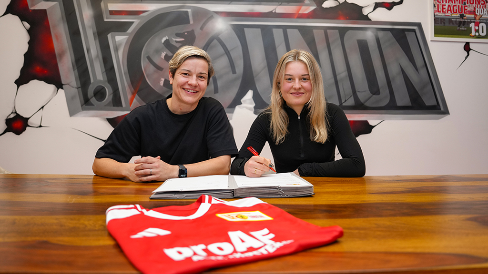

Aufstiegsaspirant Union Berlin verstärkt sich in der Winterpause mit Nele Bauereisen vom direkten Konkurrenten Nürnberg und Leonie Köster aus Basel.
Im Laufe von wenigen Stunden hat der 1. FC Union Berlin zum Wochenstart die Verpflichtung der beiden deutschen Talente bekanntgegeben. Damit geht die Planung der Köpenicker, etwas langfristiges aufzubauen, ein weiteres Stück voran.
Nele Bauereisen kommt mit sechs Treffern in 13 Ligaspielen als drittbeste Torschützin vom Tabellenführer Nürnberg zum direkten Verfolger nach Berlin. Die 20-Jährige Angreiferin mit Bundesliga Erfahrung soll den Eisernen beim Durchmarsch aus der Regionalliga Nordost in die Bundesliga helfen.
“Als ich in der Hinrunde gegen den 1. FC Union Berlin gespielt habe, war ich von der Art und Weise, wie die Mannschaft aufgetreten ist, beeindruckt. Union spielt einen offensiven und attraktiven Fußball, der perfekt zu meiner Spielweise passt. Ich bin überzeugt, dass ich dem Team weiterhelfen werden kann.”, erklärt Bauereisen ihren Wechsel in die Hauptstadt. Auf ein Wiedersehen mit dem Club darf sie sich direkt bei ihrem ersten Heimspiel am 16.02. im Stadion An der Alten Försterei freuen.
Mit Leonie Köster wurde kurz darauf auch eine Akteurin für das Mittelfeld vorgestellt. Seit Sommer 2023 spielte die gebürtige Münchnerin, die sowohl offensiv als auch defensiv im Mittelfeld agieren kann, beim FC Basel. In der Women’s Super League kam sie in dieser Zeit auf 36 Einsätze, bei denen sie zwei Tore vorbereitete und sechs selber erzielte. In Berlin trifft sie mit Cara Bösl und Eleni Markou auf zwei ehemalige Teamkolleginnen: Mit Bösl spielte sie bereits bei Eintracht Frankfurt zusammen, Markou hat sie während der gemeinsamen Zeit in Basel kennengelernt.
Besonders “die klare Vision des Vereins” habe sie überzeugt. Diese “passt perfekt zu meinen eigenen Zielen und genau deshalb freue ich mich umso mehr auf unseren gemeinsamen Weg“.
Beide werden mit der Mannschaft diese Woche ins Trainingslager nach Spanien reisen. Am 08. Februar steht für die Neu-Köpenickerinnen zum Rückrundenauftakt das erste Pflichtspiel gegen den Hamburger SV an.